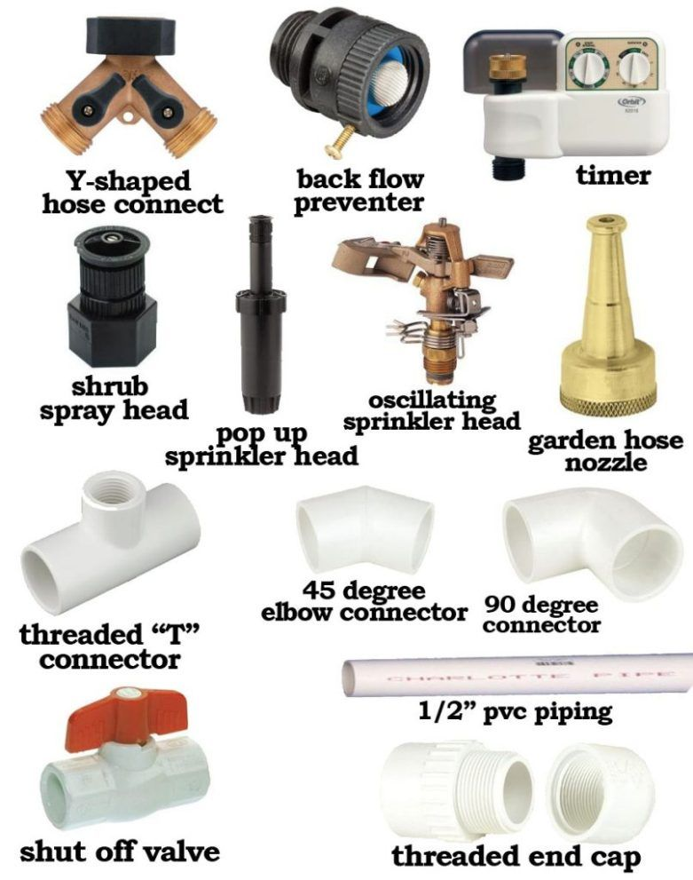

📖 Introduction
Sprinkler irrigation distributes water through a network of pipes and sprays
it into the air, simulating natural rainfall. This method is suitable for almost
all types of crops and soils, especially where water needs to be applied uniformly.
⚙️ Parts of a Sprinkler Irrigation System
- Pump Unit – Supplies water under pressure.
- Mainline and Sub-main Pipes – Carry water across the field.
- Lateral Pipes – Deliver water to sprinkler heads.
- Sprinkler Heads/Nozzles – Spray water over crops.
- Valves and Fittings – Control water flow.
- Filter – Prevents clogging of nozzles.

🔧 How to Set Up
- Connect the pump to a water source (well, tank, or reservoir).
- Lay the mainline pipe across the field and attach sub-mains.
- Install lateral pipes connected to sub-mains at equal spacing.
- Fix sprinkler heads on laterals at calculated distances.
- Attach a filter before the pump to avoid nozzle clogging.
- Check all connections for leaks and ensure proper alignment.
▶️ How to Use
Start the pump to create pressure in the pipes. Water flows through
the system and is sprayed into the air through sprinkler nozzles, falling
like rain over the crops. Adjust the nozzle direction for maximum coverage.
🛠️ Maintenance Tips
- Clean nozzles and filters regularly to avoid clogging.
- Lubricate moving parts of rotating sprinklers.
- Check for pipe leaks and repair immediately.
- Ensure pump pressure is within recommended limits.
- Store pipes properly during off-season to avoid damage.
⬅ Back to Irrigation Techniques